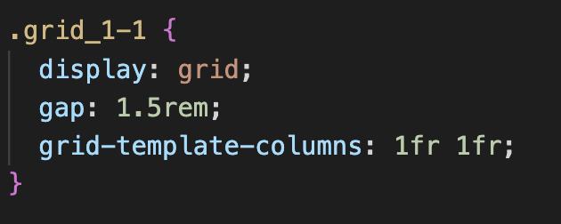
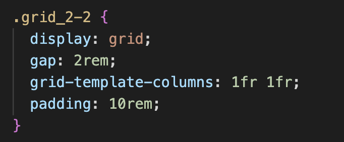

02
↓
Grundlæggende Web
I første tema "Grundlæggende Web" har vi fokus på respontivt design,
her blev vi introduceret til en række stilarter, hvor jeg valgte at
tage udgangspunkt i "swiss design", da jeg hurtig blev inspreret af
"Giselle/beethoven" plakaten med de rene liner og det flotte grid.
i dette forbløb lærte vi at lave wireframes, layoutdiagrammer,
moodborads og style tiles, derudover den grundlæggende opbyning af web
HTML og CSS. Dette gav et godt fundement, som jeg også brugte til
senere projekter.
⌄
Computersite
Vi fik introduktion til opbyningen og struktueren af HTML og CSS. Med det lærte vi at opbygge vores site til vores studiestartsprøve.
”html markere strukturen, erklære css reglerne for præsentationen”_______________________________________________________________________________________________________________________________________________________
4 STILARTER
Modernisme
Postmodernisme
Retro Design
Futursime
Swiss design
Ydligere i dette tema blev vi tildelt 4 stilartsperiode, hvor vi ud fra dem skulle skabe vores eget website. Jeg valgte at tage udgangspunkt i "Swiss Design", som ligger under Retro Design. Ved hjælp af XD gjorde det, det også nemmere at fremstille ideer og tanker ved design processen ved at lave et moodboard og style tiles. - Se nedenunder for MOODBOARD og STYLE TILE -
Grid
I denne opgave gjorde jeg særlig brug af grid, istedet for flexbox. Det gjorde jeg fordi grid, hjalp mig til at sætte det op i det layoute grid jeg skulle bruge. Jeg gjorde særlig brug af (Grid-template-columns. 
_______________________________________________________________________________________________________________________________________________________
Emnesite
Efter design processen og research af "swiss" design, var det videre til HTML og CCS.
SE EMNESITE
_______________________________________________________________________________________________________________________________________________________
Konklusion
I dette tema har jeg lært det fundementale i grunlæggende web. HTML,
CSS. Under kode, lærte jeg grid og flexbox, som jeg også har brugt i
andre projekter. Jeg brugte grid i både computersite og i emnesite,
flexbox brugte jeg i computersite. Respontivt design lærte mig at man
skal huske at designe for både website og smartphones, men også en af
mine svagheder.
Derudover fik vi også introduktion til Photoshop hvor vi lærte at
arbejde med billedebehandling, så som beskæring, størrelse og
filformat. Vi lærte om designkonventoiner og gestalt love. Og Tema 2
var også starten på at lære moodboard, style tiles, wireframes og
mouck-ups. Dette tema hat fyldt på meget, som gav mig en god start på
semesteret.